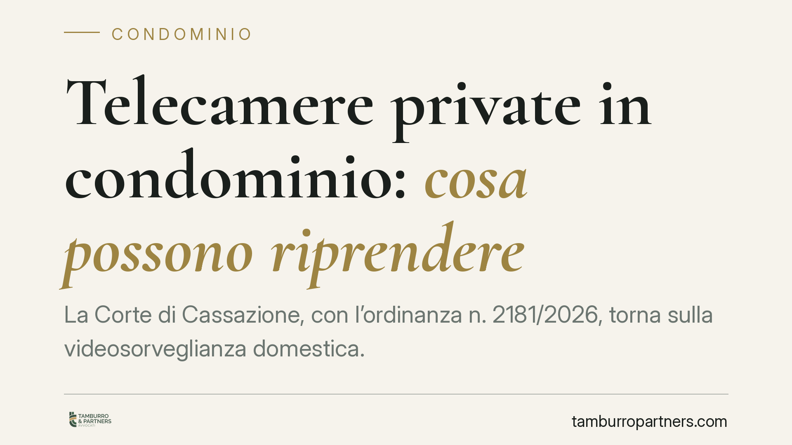

Telecamere private in condominio: cosa possono riprendere
La Corte di Cassazione, con l'ordinanza n. 2181/2026, torna sulla videosorveglianza domestica. Il singolo condòmino può installare una telecamera senza consenso degli altri né delibera assembleare, ma solo se inquadra la propria porta d'ingresso. Restano vietate le riprese stabili delle parti comuni e gli atti compiuti per infastidire i vicini. Un tema ricorrente nei conflitti condominiali.

Il caso deciso dalla Cassazione
La questione è tra le più frequenti nella vita condominiale: un condòmino installa una telecamera all'esterno della propria abitazione e i vicini contestano l'invasione della loro sfera privata.
Con l'ordinanza n. 2181/2026 la Corte di Cassazione ribadisce un principio ormai consolidato: la telecamera privata è lecita quando serve a tutelare la sicurezza dell'unità immobiliare e inquadra esclusivamente lo spazio strettamente pertinente, come la porta d'ingresso.
In questo caso non occorre né il consenso degli altri condòmini né una delibera dell'assemblea. Si tratta infatti di un impianto individuale, che riguarda la proprietà esclusiva del singolo e non incide sull'uso delle parti comuni.
Inquadramento normativo
Occorre distinguere due situazioni diverse.
La videosorveglianza sulle parti comuni decisa dal condominio è disciplinata dall'art. 1122-ter del Codice civile, introdotto dalla riforma del 2012. Richiede una delibera dell'assemblea con la maggioranza qualificata prevista dall'art. 1136, secondo comma, c.c. (maggioranza degli intervenuti e almeno metà del valore dell'edificio).
La telecamera privata del singolo condòmino segue invece una logica differente. Se le riprese restano confinate allo spazio personale, si applica l'esenzione per uso esclusivamente domestico prevista dal Regolamento europeo sulla protezione dei dati (GDPR, art. 2, par. 2, lett. c). In questo perimetro la normativa privacy non si applica e non serve alcuna autorizzazione condominiale.
Il limite invalicabile è duplice. Da un lato, la telecamera non può riprendere in modo stabile aree comuni (androni, scale, cortili, pianerottoli condivisi) né la proprietà altrui. Dall'altro, non può trasformarsi in uno strumento di molestia: qui entra in gioco l'art. 833 c.c., che vieta gli atti emulativi, ossia i comportamenti privi di reale utilità per chi li compie e diretti unicamente a nuocere o infastidire gli altri.
Cosa cambia per chi vive in condominio
Per il condòmino che vuole proteggere la propria abitazione, la pronuncia conferma un margine di autonomia concreto: non deve chiedere il permesso a nessuno, purché l'obiettivo resti circoscritto al proprio ingresso.
Per chi teme di essere ripreso, invece, la tutela non viene meno. Se la telecamera inquadra stabilmente il pianerottolo comune, l'ingresso del vicino o porzioni di cortile condiviso, l'installazione diventa illegittima e può essere contestata sia sul piano della privacy sia su quello civilistico.
Un punto merita attenzione: l'angolo di ripresa. Molte controversie nascono non dalla presenza della telecamera in sé, ma da un campo visivo troppo ampio, che finisce per catturare spazi che non spettano a chi l'ha installata. Anche un dispositivo formalmente "privato" può risultare illecito se orientato oltre il necessario.
L'amministratore di condominio, dal canto suo, non ha poteri diretti sulle telecamere private dei singoli, ma può e deve intervenire quando le riprese interessano le parti comuni, segnalando la questione all'assemblea.
Cosa fare in concreto
- Verificate il campo visivo della telecamera prima e dopo l'installazione: deve limitarsi alla vostra porta e allo spazio strettamente pertinente, evitando pianerottoli e proprietà altrui.
- Applicate la mascheratura delle zone comuni o della proprietà dei vicini quando il dispositivo, per posizione, tende a inquadrarle: molti impianti consentono di oscurare porzioni dell'immagine.
- Segnalate la presenza dell'impianto con un cartello informativo se, pur marginalmente, la ripresa può interessare aree frequentate da terzi.
- Documentate la situazione se ritenete di essere ripresi illegittimamente: fotografie della telecamera, del suo orientamento e degli spazi coinvolti sono utili per una eventuale contestazione.
- Portate in assemblea la questione quando riguarda la videosorveglianza delle parti comuni: solo una delibera con la maggioranza di legge legittima l'impianto condominiale.
La linea di confine, in questa materia, passa dalla misura: una telecamera proporzionata alla tutela della propria casa è lecita; una che sorveglia gli altri non lo è.
---
*Contributo informativo a cura di Tamburro & Partners - Avv. Giuseppe Tamburro. Non costituisce parere legale.*
Ogni condominio ha una storia a sé.
Se gestisci un'amministrazione e vuoi un confronto su una specifica questione condominiale, scrivi allo studio. Ti rispondiamo entro un giorno lavorativo.